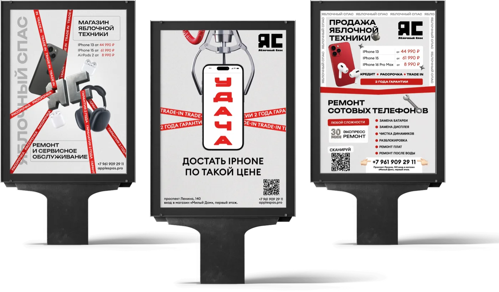
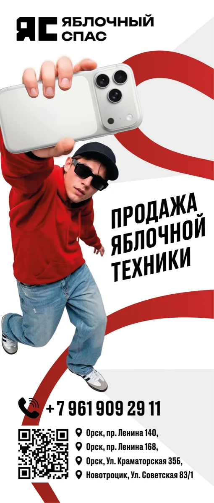
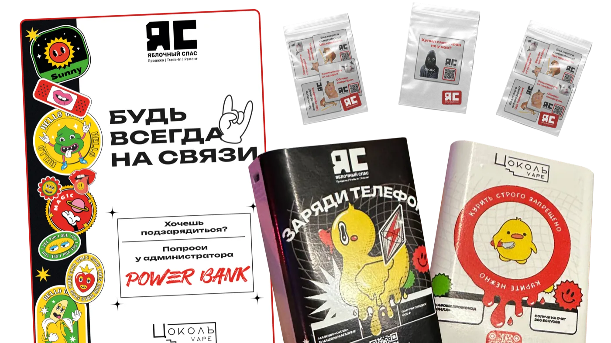
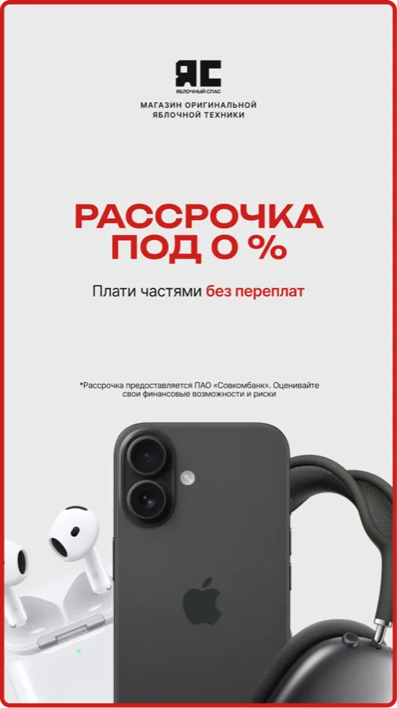
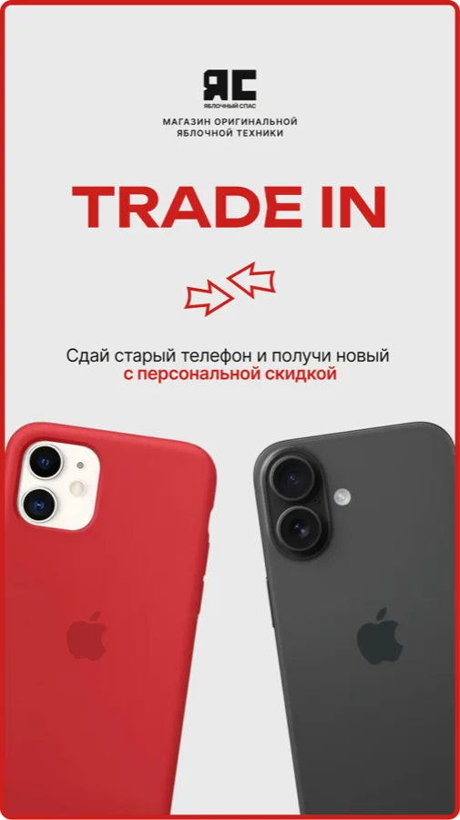
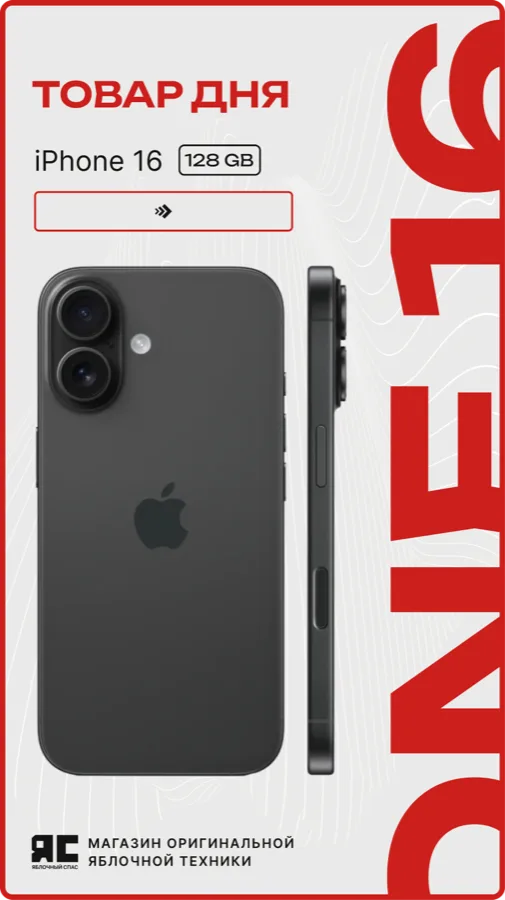
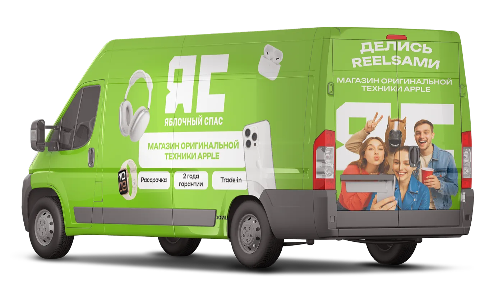
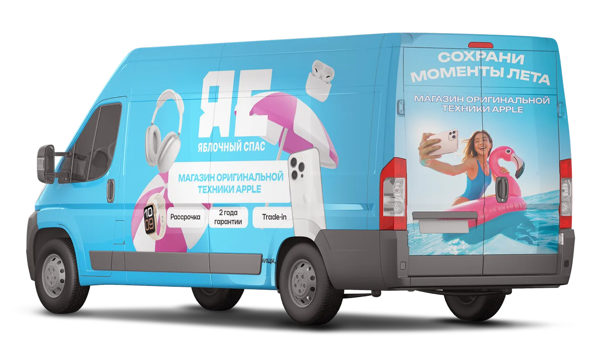
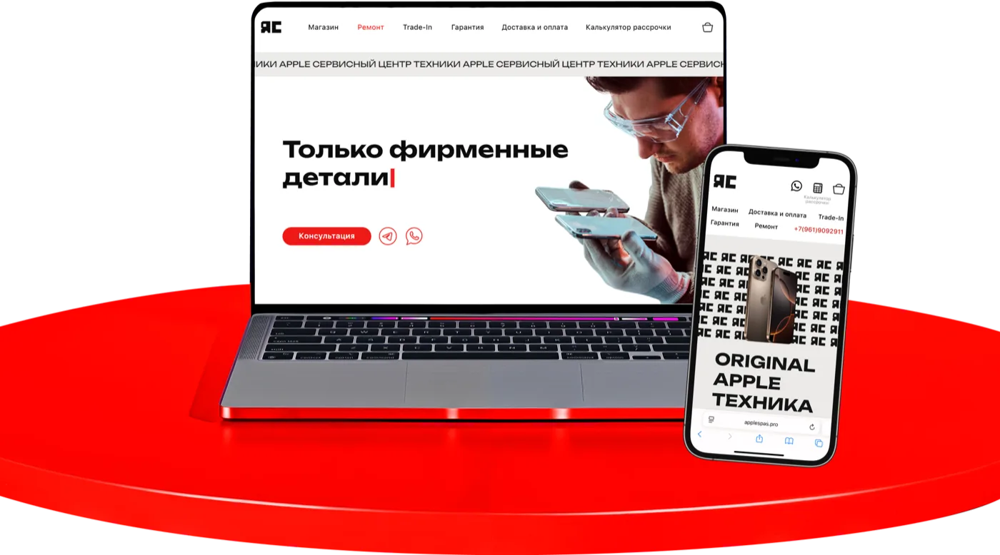
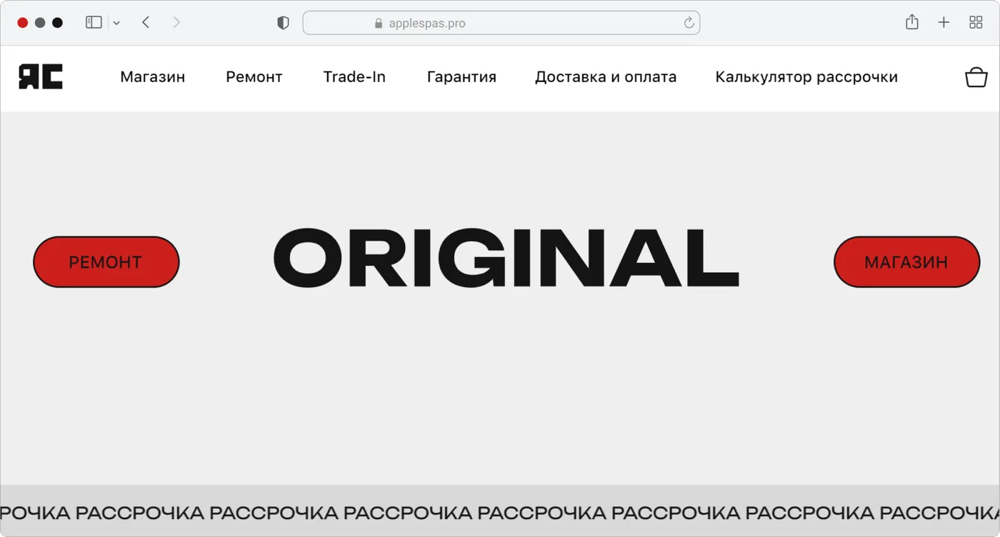

Яблочный спас
Магазин техники AppleБренд «Яблочный спас» пришёл к нам на этапе запуска — без фирменного стиля, стратегии и чёткого ТЗ. Мы взяли на себя роль креаторов: полностью разработали визуальную концепцию, подобрали фирменные цвета и заложили фундамент бренда. Сотрудничество переросло в долгосрочную дизайн-подписку, в рамках которой мы третий год сопровождаем маркетинг и развитие магазина.

Наружная реклама
Мы самостоятельно продумали серию креативов для наружной рекламы и роллапов, создав яркий и заметный образ магазина в городской среде без готовых технических заданий от клиента.


Наклейки и стикеры
В рамках общей концепции мы предложили использовать брендированные стикеры для упаковки и выдачи заказов. Это решение добавило бренду «крафта» и сделало офлайн-контакт с покупателем более личным и запоминающимся.

Сторис для соцсетей
Для продвижения в соцсетях мы создали серию модульных шаблонов и креативов — от «Товара дня» и Trade-In до рассрочки и сезонных акций. Система позволяет быстро собирать новые публикации в едином стиле.



Мобильная реклама
Дизайн брендирования маршрутных такси — инициатива по расширению присутствия бренда в городе. Макеты построены так, чтобы выделяться в потоке машин и считываться даже при беглом взгляде.


Дизайн сайта
Разработка сайта стала ключевым этапом создания цифрового образа бренда. Мы с нуля спроектировали пользовательский путь (UX) от первого экрана до оформления заказа и детально проработали адаптивность.
В структуру вошли главная страница с акцентными предложениями, минималистичный каталог магазина, разделы «Ремонт», «Trade-In» и «Доставка и оплата» — всё, чтобы снять вопросы клиента до покупки.


Обсудим ваш проект
Расскажите о задаче — подскажем оптимальный формат работы, ориентир по срокам и стоимости.